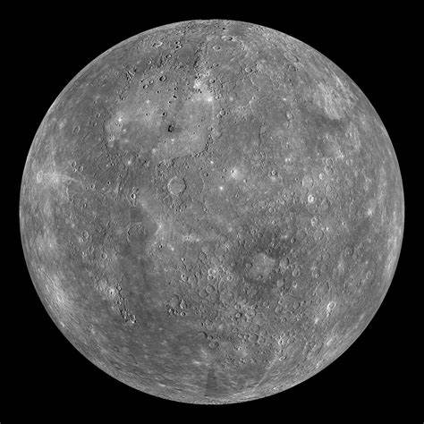

The smallest and innermost planet in our Solar System

Mercury is the smallest and innermost planet in the Solar System, orbiting closest to the Sun. Its orbit around the Sun takes 87.97 Earth days, the shortest of all the planets in the Solar System.
Despite its proximity to the Sun, Mercury is not the hottest planet in our solar system that title belongs to nearby Venus, thanks to its dense atmosphere. But Mercury is the fastest planet, zipping around the Sun every 88 Earth days.
Mercury has the most extreme temperature variations in the Solar System, ranging from -173°C at night to 427°C during the day.
Mercury is actually shrinking! The planet's interior is cooling, causing it to contract and creating massive scarps (cliffs) on its surface.
The Sun appears to rise, set, and rise again from some locations on Mercury due to its elliptical orbit and slow rotation.
Despite its small size, Mercury has a global magnetic field about 1% as strong as Earth's.
Only two spacecraft have visited Mercury so far:
The first spacecraft to visit Mercury, mapping about 45% of its surface. It made three flybys of the planet.
NASA's MESSENGER spacecraft orbited Mercury from 2011 to 2015, mapping the entire surface and making important discoveries about its composition and magnetic field.
A joint mission by ESA and JAXA that will arrive at Mercury in 2026 to study the planet's surface, interior, and magnetic field in unprecedented detail.
Mercury is only slightly larger than Earth's Moon. About 18 Mercury would fit inside Earth.
Mercury travels through space at nearly 47 km/s, faster than any other planet in our Solar System.
A day on Mercury (sunrise to sunrise) lasts about 176 Earth days - longer than its year of 88 Earth days!